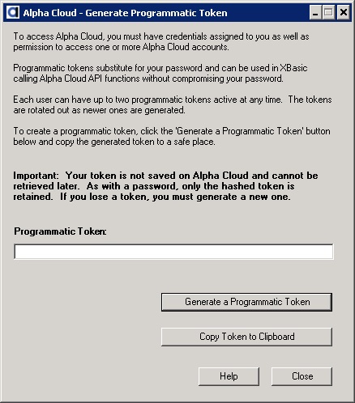

Overview
Tasks You Can Perform
Getting Started
A More Complete Example
Deploying a Previously Published Application
Calling DeployApplicationComplete()
A Complete List of Alpha Cloud Xbasic API Functions
Alpha Cloud is about deploying applications directly from Alpha Anywhere. If you are building a SaaS (Software as a Service) application you may want to deploy published applications automatically to implement provisioning and maintenance. The Alpha Cloud Xbasic API (Application Programming Interface) makes it possible to build a web application that can be used to do this.
With the Alpha Cloud Xbasic API, you can manage web sites, security applications and deployments from Xbasic on either the desktop or Alpha Cloud. In this section we will introduce the concepts and help you get started in automating deployment from within an Xbasic script.
Notes:
Your provisioning application may be used by your own internal staff or prospective customers. You will see a number of functions that can help you navigate your own subscription as well those with which you can populate dropdown lists for prospects.
Automated Deployment
List Items
Validation Functions
The functions below schedule a deployment, create a new deployment for an existing web site and security application, or create everything from scratch.
| ScheduleApplicationDeployment | Creates a new schedule item for an existing deployment selecting application version and Alpha Anywhere Application Server for IIS build. This function assumes the deployment has already been added and the web site and security application have already been assigned. |
| DeployApplicationToWebSite | Deploys a previously published application to a web site. The web site and security application must exist, but the deployment is created if it does not exist. |
| DeployApplicationComplete | Does a complete deployment of a previously published application. Any objects not previously defined, such as web sites and security applications, can be created at the same time. Again, the caller must have permission to create any needed resources. |
The "List" functions return lists of items suitable for adding to dropdown lists for selection.
Note: Some of the lists are global and others depend on setting the current subscription, account, application and/or deployment to establish the context of the call.
| ListAccounts | Returns a crlf() delimited list of all accounts for the current subscription. |
| ListApplications | Returns a crlf() delimited list of applications for the current subscription and account. |
| ListApplicationVersions | Returns a crlf() delimited list of versions of the current application that have been published. |
| ListBuilds | Returns a crlf() delimited list of Alpha Anywhere Application Server for IIS builds available. |
| ListCertificates | Returns a crlf() delimited list of certificate names for the current subscription. |
| ListRegions | Returns a crlf() delimited list of regions available. |
| ListServerGroups | Returns a crlf() delimited list of server groups for the current subscription. |
| ListWebSites | Returns a crlf() delimited list of web sites for the current subscription. |
There are also validation functions that can be used to verify manually entered input.
For example:
| CertificateNameIsValid | Returns .t. if the certificate named is valid. |
| RegionNameIsValid | Returns .t. if the specified region name is valid> |
| RegularExpressionIsValid | Returns .t. if a regular expression is valid. This function can be used when prompting for a regular expression to be used to validate a password when setting up a Security Application. |
The Alpha Cloud Xbasic API exposes many of the same services provided by dialogs, but with a slightly simpler programmatic API. For example GUIDs are used internally to create unique keys. These are not exposed in the Alpha Cloud API.
To use the Alpha Cloud Xbasic API we need to create a programmatic token to stand in for our password in code. For each web request that invokes the API we will also need to register the API and create a client object to make calls with.
This section will walk through the steps needed to make some simple calls to the Alpha Cloud Xbasic API.
Creating a Programmatic Token
Alpha Cloud includes the ability to create a programmatic token so that your user password does not need to be embedded into Xbasic code or stored with your program data. You will still want to protect your token, but the token separates password management from program maintenance. Either your password or a token you maintain can be used to log in to the Alpha Cloud API (think of the token as standing in for your password).
To create a programmatic token, select Alpha Cloud from the web control panel and then select Settings and Generate Programmatic Token from the menus that drop down.
Using the Generate Programmatic Token dialog, you can create up to two programmatic tokens (new ones after that will rotate out the oldest token). It is recommended that you rotate tokens out on a schedule to protect access to your Alpha Cloud user account.
Note: Be sure to save your token off someplace safe when you create it. Tokens are securely hashed and cannot be retrieved later.
Registering the API
Once per process execution, the Alpha Cloud API must be registered. This process checks for the latest DLL, and installs a new one if necessary and then loads the DLL and registers types in the Xbasic namespace system. When running on Alpha Anywhere Application Server for IIS as a web request, you will want to do this at least once for the request. You can do this on an A5W page, or in the function that handles the request.
Note: There is no performance penalty for additional calls to register the API.
The Xbasic code required to do this as follows (shown in an interactive window session):
r = AlphaCloud::API::Register()
?r.Success
The Register() function returns a CallResult object. A CallResult has a Success, a Warning and an Error logical properties and a Text property with more complete information.
Once the API is registered, the AlphaCloud namespace is populated.
Creating the API Client
To call functions on the Alpha Cloud Xbasic API you will need to dimension the client as follows:
DIM cl as alphacloud::Client = new Alphacloud::Client("<my user name/e-mail> ", "<my password or programmatic token>", "<my subscription name>")
Note: There are other optional parameters that are used by Alpha Software development staff for testing.
Populating Variables With the Current Context
Depending on the function you call, you may need to provide more context information by setting properties on the client object prior to making the call. For example, a valid subscription is required to list out available regions, but you cannot schedule a deployment without providing the names of the affected account and application).
To set the context, simply assign the names to the related properties as below.
| cl.SubscriptionName | = | "Alpha Software" |
| cl.Account | = | "Primary" |
| cl.Application | = | "DemoMobile" |
Note: You can omit the subscription name on the constructor and set it as above. As long as the property is set before the first API call, you will not get an error.
A subscription has one or more accounts. The default account name is "Primary"). You can create additional accounts. You can create applications within an account and then create one or more deployments for each application. This hierarchy provides a complete path to a deployment.
Subscription
Account
Application
Deployment
Note: Web sites, security applications and server groups are all owned by the subscription directly. You will need to set the subscription prior to calling functions that rely on context for these objects.
Calling API Client Functions
Once you have registered the Alpha Cloud API, dimensioned your client object and set the context, you can begin calling API functions.
dim RegionList as C
?cl.ListRegions(RegionList)
?RegionList
Note: The Alpha Cloud Xbasic API uses the pattern common to Alpha Anywhere of returning a logical .t. or .f. from function calls. The property CallResult has the description of any error that may have occurred:
? cl.CallResult.text
Here is a more complete example. The Xbasic script below registers the Alpha Cloud Xbasic API, dimensions a client object, sets the context and lists out the regions.
Tip: If you run the script below in the Xbasic interactive window it will display a list of regions.
r = AlphaCloud::API::Register()
?r.Success
DIM cl as alphacloud::Client = new Alphacloud::Client("<my user name/e-mail> ", "<my password or programmatic token>")
cl.SubscriptionName = "Alpha Software"
cl.Account = "Primary"
cl.Application = "DemoMobile"
dim RegionList as C
?cl.ListRegions(RegionList)
?RegionList
There are three ways to get your application deployed to a web site, depending on whether you are creating it from scratch or updating it.
In order to deploy a published application you need a web site, a security application and server group (in public tenancy, this value is ignored, so set it to "Default"). The key difference is that some functions allow you to define required objects, other require it to exist already.
| ScheduleApplicationDeployment | Use this function to schedule a deployment (start a web site/application with a specific version of your application, a specific build of Alpha Anywhere and a logging option as well as an option for security publication). |
| DeployApplicationToWebSite | Use this function to deploy to an existing web site and security application (the deployment does not need to exist yet). |
| DeployApplicationComplete | Use this function to deploy an existing application version to a web site, security application and deployment. None of the objects need be defined before making this call. It does a complete deployment in a single call. The parameters are more complicated for this function, but it can be easier to use, once they are set up. |
The function DeployApplicationComplete()can be used to create a new web site, security application and deployment and to schedule deployment of a previously published application.
In the example interactive session below, you can see the definitions of the web site, the security application and the deployment as well as the schedule itself.
' -----------------------------------------------------------------------------------------
' -- Create a web site, security application and schedule a new deployment with them
' -----------------------------------------------------------------------------------------
dim DeplComplete as AlphaCloud::DeployApplicationCompleteRequest
DeplComplete.DeploymentName = "APITest5"
DeplComplete.ApplicationPath = "/"
' Web Site (the HostName and CertificateName must be omitted if you do not have a certificate)
DeplComplete.WebSite.Name = "APITest5"
DeplComplete.WebSite.RegionName = "US-East"
DeplComplete.WebSite.HostName = "mobiledemo.alphacloudsamples.com"
DeplComplete.WebSite.CertificateName = "mobiledemo.alphacloudsamples.com"
' Security Application
DeplComplete.SecurityApplication.Name = "TestSA5"
DeplComplete.SecurityApplication.RegionName = "US-East"
DeplComplete.SecurityApplication.PasswordSettings.ChangeonFirstUse = AlphaCloud::BooleanOrDefault::Default
DeplComplete.SecurityApplication.PasswordSettings.ExpirationINMinutes = -1
DeplComplete.SecurityApplication.PasswordSettings.MinimumLength = -1
DeplComplete.SecurityApplication.PasswordSettings.StrengthRegularExpression = ""
' Schedule
DeplComplete.Schedule.ApplicationVersion = 84
DeplComplete.Schedule.AlphaAnywherebuildNumber = 4655
DeplComplete.Schedule.ApplicationLoggingOption = "Diagnostic"
DeplComplete.Schedule.SecurityPublishOption = "Preserve"
DeplComplete.Schedule.LocalStartTime = now()
DeplComplete.Schedule.LocalEndTime = addMonths(now(), 3)
'DeplComplete.Schedule.LocalEndTime = System::DateTime::MaxValue
?cl.DeployApplicationComplete(DeplComplete)
= .T.
?cl.DisableApplicationDeployment(DeplComplete.DeploymentName)
= .T.
Here is a complete list of the Alpha Cloud Xbasic API functions accessed using the Client object.
The signature for the AlphaCloud:Client object constructor is:
Client(UserName AS C, Password AS C [, SubscriptionIn AS C [, CloudImplementation AS C]])
To create a new instance of the client, dimension a variable:
DIM cl as alphacloud::Client = new Alphacloud::Client("<user name> ", "<password/programmatic token>")
CertificateNameIsValid AS L (CertificateName AS C)
Checks the value of CertificateName to see if it is a valid certificate for the subscription.
Returns .t. if the certificate name matches a certificate for the subscription and .f. if it does not.
CreateApplicationDeployment AS L (Request AS AlphaCloud::SubscriptionApplicationDeployment)
Creates a new deployment for an application.
You must DIM an object of type AlphaCloud::SubscriptionApplicationDeployment and populate it prior to making the call.
Returns .t. if the function succeeds and .f. if it does not.
CreateSecurityApplication AS L (Request AS AlphaCloud::SubscriptionSecurityApplication)
Creates a new security application.
You must DIM an object of type AlphaCloud::SubscriptionSecurityApplication and populate it prior to making the call.
Returns .t. if the function succeeds and .f. if it does not.
CreateWebSite AS L (Request AS AlphaCloud::SubscriptionWebSite)
Creates a new web site.
You must DIM an object of type AlphaCloud::SubscriptionWebSite and populate it prior to making the call.
Returns .t. if the function succeeds and .f. if it does not.
DeployApplicationComplete AS L (Request AS AlphaCloud::DeployApplicationCompleteRequest)
Creates a new deployment from a full specification (see the example above).
You must DIM an object of type AlphaCloud::DeployApplicationCompleteRequest and populate it prior to making the call.
Returns .t. if the function succeeds and .f. if it does not.
DeployApplicationToWebSite AS L (Request AS AlphaCloud::DeployApplicationToWebSiteRequest)
Deploys an application to an existing web site.
You must DIM and object of type AlphaCloud::DeployApplicationToWebSiteRequest and populate it prior to making the call.
Returns .t. if the function succeeds and .f. if it does not.
DisableApplicationDeployment AS L (DeploymentName AS C)
Disables a deployment.
Important: Disabling a deployment that has been scheduled will stop the deployed application as soon as Alpha Cloud applies the change.
Returns .t. if the function succeeds and .f. if it does not.
DisableSecurityApplication AS L (SecurityApplicationName AS C)
Disables a security application.
Important: Disabling a security application will stop any deployed application assigned to it as soon as Alpha Cloud applies the change.
Returns .t. if the function succeeds and .f. if it does not.
DisableWebSite AS L (WebSiteName AS C)
Disables a web site.
Important: Disabling a web site will stop any deployed application assigned to it as soon as Alpha Cloud applies the change.
Returns .t. if the function succeeds and .f. if it does not.
EnableApplicationDeployment AS L (DeploymentName AS C)
Enables a deployment.
Important: Enabling a deployment that has been scheduled will start the deployed application as soon as Alpha Cloud applies the change provided the subscription, account, application, web site and security application are enabled.
Returns .t. if the function succeeds and .f. if it does not.
EnableSecurityApplication AS L (SecurityApplicationName AS C)
Enables a security application.
Important: Enabling a security application will start or restart any scheduled deployment assigned to it as soon as Alpha Cloud applies the change provided the subscription, account, application, deployment and web site are enabled.
Returns .t. if the function succeeds and .f. if it does not.
EnableWebSite AS L (WebSiteName AS C)
Enables a web site.
Important: Enabling a web site will start or restart any scheduled deployment assigned to it as soon as Alpha Cloud applies the change provided the subscription, account, application, deployment and security application are enabled.
Returns .t. if the function succeeds and .f. if it does not.
GetApplicationCurrentVersion AS L (BYREF Version AS N, Application AS C)
Gets the current version number for the application requested within the current subscription and account.
You must dim Version as N prior to calling the function.
Returns .t. if the function succeeds and .f. if it does not.
GetApplicationDeployment AS L (BYREF ApplicationDeployment AS P, ApplicationDeploymentName AS C)
Gets an AlphaCloud::ApplicationDeployment object for the deployment requested within the current subscription, account and application.
Returns .t. if the function succeeds and .f. if it does not.
GetSecurityApplication AS L (BYREF SecurityApplication AS P, SecurityApplicationName AS C)
Gets an AlphaCloud::SecurityApplication object for the security application named within the current subscription.
Returns .t. if the function succeeds and .f. if it does not.
GetWebSite AS L (BYREF WebSite AS P, WebSiteName AS C)
Gets an AlphaCloud::WebSite object for the web site named within the current subscription.
Returns .t. if the function succeeds and .f. if it does not.
ListAccounts AS L (BYREF AccountList AS C)
Returns a crlf() delimited list of accounts for the current subscription in AccountList.
Returns .t. if the function succeeds and .f. if it does not.
ListApplicationDeployments AS L (BYREF ApplicationDeploymentList AS C)
Returns a crlf() delimited list of deployments in ApplicationDeploymentList for the current subscription, account, and application.
Returns .t. if the function succeeds and .f. if it does not.
ListApplications AS L (BYREF ApplicationList AS C)
Returns a crlf() delimited list of applications in ApplicationList for the current subscription and account.
Returns .t. if the function succeeds and .f. if it does not.
ListApplicationVersions AS L (BYREF Versions AS C)
returns a crlf() delimited list of the versions that have been published for an application in Versions.
Returns .t. if the function succeeds and .f. if it does not.
ListBuilds AS L (BYREF Builds AS C)
Returns a crlf() delimited list of builds available on Alpha Cloud.
Returns .t. if the function succeeds and .f. if it does not.
ListCertificates AS L (BYREF Certificates AS C)
Returns a crlf() delimited list of certificates in Certificates for the current subscription.
Returns .t. if the function succeeds and .f. if it does not.
ListRegions AS L (BYREF Regions AS C)
Returns a crlf() delimited list of available Alpha Cloud regions in Regions.
Returns .t. if the function succeeds and .f. if it does not.
ListSecurityApplications AS L (BYREF SecurityApplicationList AS C)
Returns a crlf() delimited list of security applications in SecurityApplicationList for the current subscription.
Returns .t. if the function succeeds and .f. if it does not.
ListServerGroups AS L (BYREF ServerGroups AS C)
Returns a crlf() delimited list of server groups in ServerGroups for the current subscription.
Returns .t. if the function succeeds and .f. if it does not.
ListWebSites AS L (BYREF WebSiteList AS C)
Returns a crlf() delimited list of web sites in WebSiteList for the current subscription.
Returns .t. if the function succeeds and .f. if it does not.
RegionNameIsValid AS L (RegionName AS C)
Validates an Alpha Cloud region name.
Returns .t. if the region is a valid Alpha Cloud region.
RegularExpressionIsValid AS L (RegularExpression AS C)
Validates a regular expression intended to be used to validate passwords.
Returns .t. if the expression is valid.
ScheduleApplicationDeployment AS L (DeploymentName AS C, Request AS AlphaCloud::ApplicationDeploymentSchedule)
Creates a new schedule line for a deployment.
You must DIM and populate an AlphaCloud::ApplicationDeploymentSchedule prior to making this call.
Returns .t. if the function succeeds and .f. if it does not.
SetApplicationDeploymentStatus AS L (DeploymentName AS C, Status AS C)
Sets the status for a deployment.
Important: Changing the status of a deployment will either force a new deployment or stop a running deployment. This operation will occur the next time Alpha Cloud looks for changes and applies them.
Returns .t. if the function succeeds and .f. if it does not.
SetSecurityApplicationPasswordSettings AS L (SecurityApplicationName AS C, PasswordSettings AS AlphaCloud::SubscriptionSecurityApplicationPasswordSettings)
Updates the password options for a security application. You must DIM an AlphaCloud::SubscriptionSecurityApplicationPasswordSettings object and populate it before calling this function.
Returns .t. if the function succeeds and .f. if it does not.
SetSecurityApplicationRegion AS L (SecurityApplicationName AS C, RegionName AS C)
Assigns the region provided to the security group.
Important: There is currently no facility to migrate security data between regions. A Security Application is backed by a database with users and roles. This database is initialized during the first deployment. If you change the region after security information has been published, the original security information will be republished to the new region.
Returns .t. if the function succeeds and .f. if it does not.
SetWebSiteHostNameAndCertificate AS L (WebSiteName AS C, HostName AS C, CertificateName AS C)
Assigns the host name and certificate name to the web site.
Note: you must make sure that your DNS provider has a CNAME that matches your host name and certificate.
Returns .t. if the function succeeds and .f. if it does not.
SetWebSiteRegion AS L (WebSiteName AS C, RegionName AS C)
Assigns the region named to the web site.
Returns .t. if the function succeeds and .f. if it does not.
SetWebSiteServerGroup AS L (WebSiteName AS C, ServerGroupName AS C)
Assigns the server group named to the web site.
Returns .t. if the function succeeds and .f. if it does not.
SetWebSiteTenancy AS L (WebSiteName AS C, TenancyName AS C)
Assigns the tenancy named to the web site.
Returns .t. if the function succeeds and .f. if it does not.